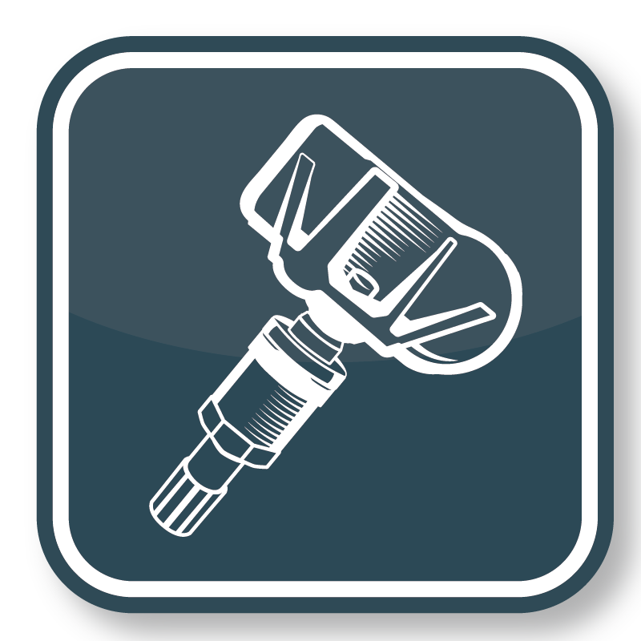
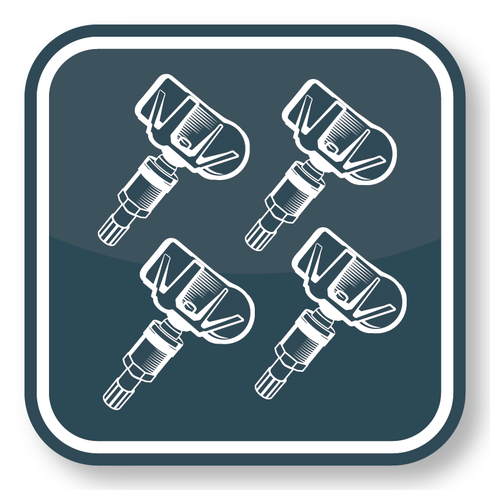

<!DOCTYPE html>
<html lang="en">
<head>
    <meta charset="UTF-8">
    <title>Title</title>
  <script src="../glitterBundle/ControlInstance.js"></script>
</head>
<style>
html{
    width: 100%;
    height: 100%;
}
body{
    width: 100%;
    height: 100%;
}
    .wrapper{
        width: 100%;height: calc(100% - 110px);
        text-align: center;
        display: flex;
        flex-direction: column;
        align-items: center;

        justify-content: space-around;
    }
    .wrapper img{
        width: 150px;
        height: 150px;
    }
    .wrapper h3{
        margin-top: 5px;
    }
</style>
<body>
<script>
    var make=glitter.mmyInterFace.selectMake.replace(/>/g,"&gt;").replace(/</g,"&lt;")
    var model=glitter.mmyInterFace.selectModel.replace(/>/g,"&gt;").replace(/</g,"&lt;")
    var year=glitter.mmyInterFace.selectYear.replace(/>/g,"&gt;").replace(/</g,"&lt;")

    lifeCycle.onCreate=function (){
        // ${glitter.mmyInterFace.selectMake}/${glitter.mmyInterFace.selectModel}/${glitter.mmyInterFace.selectYear}
    }
    lifeCycle.onCreateView=function (){
        //console.log("selectYear:"+glitter.mmyInterFace.selectYear)
        return `
        <h3 style="font-size:18px;margin:0;display: flex;align-items:center;justify-content:center;height: 60px;background-color: #1f333e;color: white;width: 100%;">
            ${make}/${model}/${year}
</h3>
<div class="wrapper" >
<div style="display: flex;flex-direction: column;" onclick="
glitter.changePage('page/Page_Select_Trigger_Way.html','Page_Select_Trigger_Way.html',true,{
    toNext:function (){
        glitter.changePage('page/Page_New_Obd_Copy.html','Page_New_Obd_Copy.html',true,{})
    }
})

">

<h3>${glitter.getLan(577)}</h3>
</div>

<div style="width: calc(100% - 30px);height: 1px;background-color: gray;"></div>
<div style="display: flex;flex-direction: column;" onclick="
glitter.changePage('page/Page_Select_Trigger_Way.html','Page_Select_Trigger_Way.html',true,{
    toNext:function (){
        glitter.changePage('page/Page_ReadSensor_ToCopy.html','Page_ReadSensor_ToCopy',true,{})
    }
})
">

<h3>${glitter.getLan(578)}</h3>
</div>
</div>
</div>
        `
    }
</script>
</body>
</html>